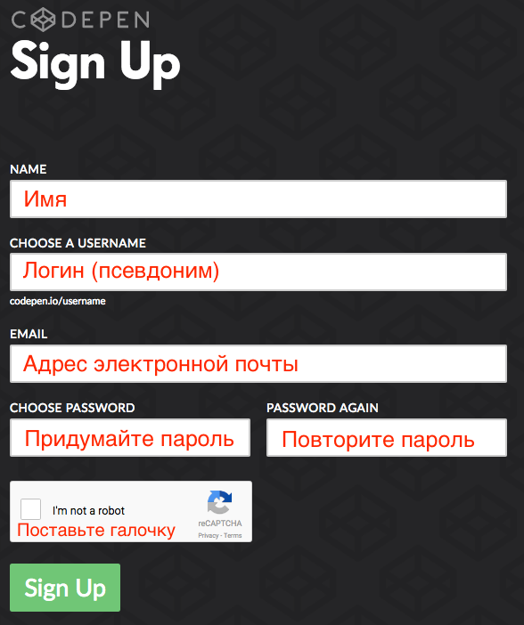
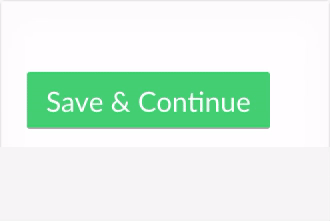
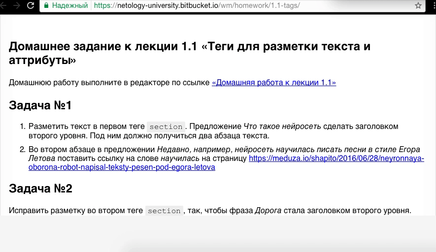
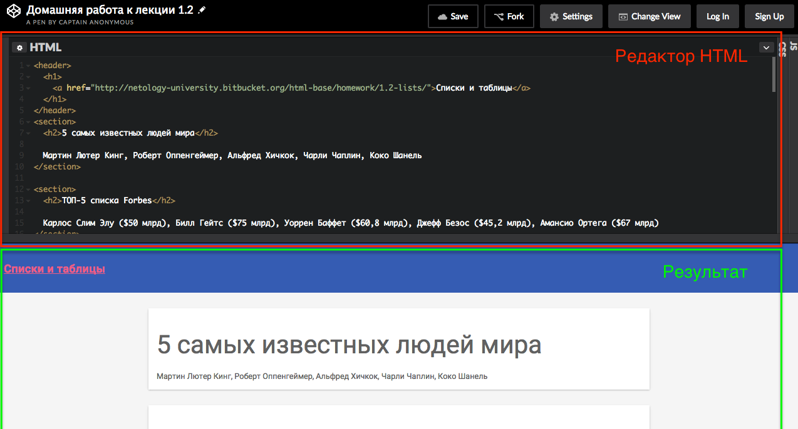
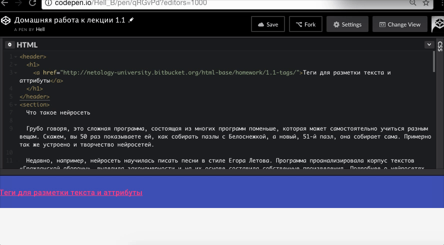
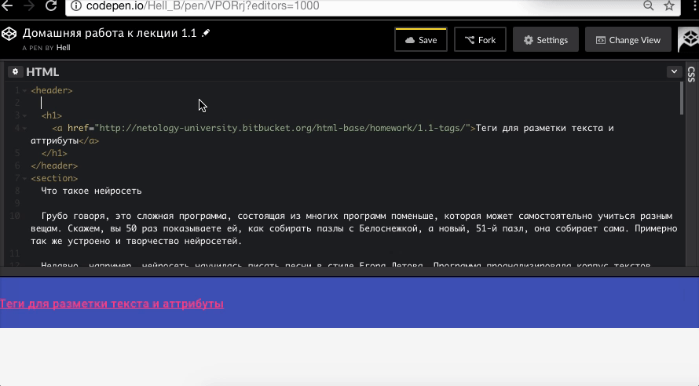
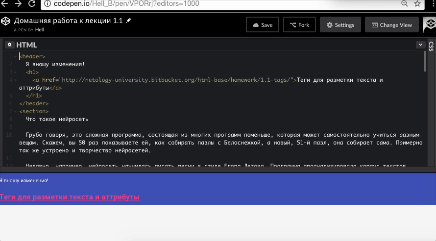

Перейдите по ссылке на codepen.io.
На открывшейся странице заполните форму регистрации. После заполнения нажмите кнопку Sign Up.
На следующей странице можете заполнить личные данные. Это не обязательно, на ваше усмотрение.
Нажмите кнопку Save & Continue.
Перейдите по ссылке на странице с домашним заданием. Она расположена под заголовком.
Перед вами открылось окно, разделенное на две части. В верхней части - редактор HTML. В нижней части вы можете в реальном времени видеть результат вашей работы.
Нажмите вверху кнопку Fork - это создаст вашу личную копию задания.
Выполняйте задание и не забывайте нажимать Save после сделанных изменений.
Найти сохраненную работу вы сможете в разделе «Pens», на вкладке «Forked».
